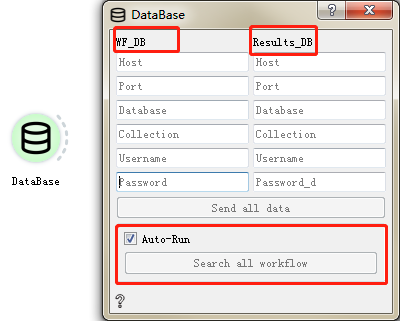

Database Control¶
Database control¶
Used to save calculation results.
Input |
Output |
|
|---|---|---|
None |
Database |
LaunchPad |
Database server information:
hostname Set host name
port number Set the port number
database name Enter the database name
collections of specified database Specify database collection
username Enter user name
password Enter login password
LaunchPad server information:
hostname Set hoset name
port number Set the port number
database name Enter the database name
collections of specified database Specify database collection
username Enter user name
password Enter login password
There is an option of ‘Auto-Run’ at the bottom of the parameter setting window. If this option is checked, the database can be automatically connected; if this option is not checked, it can be controlled by clicking ‘Send SearchEngine’.
{kind=link}
Manager control¶
Used to manage workflow and work tasks.
Input |
Output |
|||
|---|---|---|---|---|
Workflow |
Workflow list |
Launchpad |
Database |
Jobs |
When you double-click to open the control, you can see that the ‘Manager’ control does not need to set parameters. ‘Manager’ can be used to view the configured workflow information. The Workflow dialog box displays the specific information of the current workflow, including the creation time of the workflow, element types, material structure, and so on. Click ‘Add workflow’ to add a new workflow.
Similarly, there is an option of ‘Auto-Run’ at the bottom of the parameter setting window. If this option is checked, the database can be automatically connected; if this option is not checked, it can be controlled by clicking ‘Send SearchEngine’.
{kind=link}
Jobs control¶
Used to execcute workflow and submit tasks.
Input |
Output |
|||
|---|---|---|---|---|
Jobs |
FWorker |
Table |
Database |
FWorker |
The Jobs control does not require parameter settings and is used to perform work tasks. Before submitting the task, it is necessary to confirm whether the work task (manager), workflow database (lpad), result database configuration (database), and calculation server (fworker) have been configured. Therefore, the Jobs control can summarize all the data information connected to it.
Launchpad info Launch station information
Database info Database information
Workers info Server information
Workflow Specify workflow information

After the confirmation is completed, run directly by clicking ‘Run without jobs’.
The Jobs control also has an ‘Auto-Run’ option at the bottom of the window. If this option is checked, it can run automatically; if this option is not checked, it can be controlled by clicking ‘Run WF’.